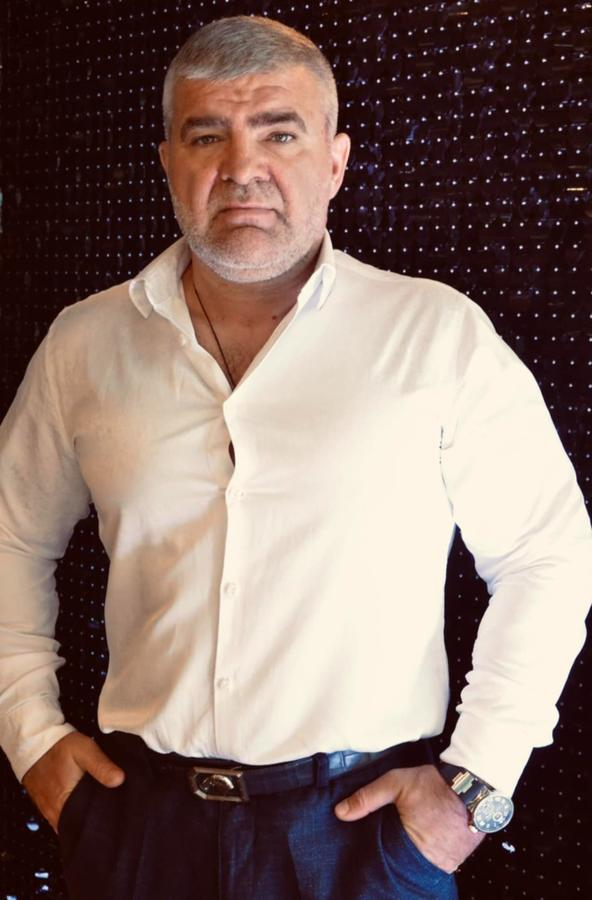

Наша місія
Системно підтримувати людей у складних обставинах — військових, дітей, переселенців і пацієнтів лікарень — адресно, вчасно і підзвітно.
Про фонд і програмиМіжнародний благодійний фонд Олександра Андріюка приймає звернення про допомогу та благодійні внески. Працюємо адресно: спорядження і медикаменти для військових, підтримка дітей, гуманітарна допомога ВПО, лікарні та тварини. ЄДРПОУ 41481057.

Коротко: хто ми, як звернутися, як підтримати і що фонд уже публікував.
Системно підтримувати людей у складних обставинах — військових, дітей, переселенців і пацієнтів лікарень — адресно, вчасно і підзвітно.
Про фонд і програмиОберіть напрям, коротко опишіть потребу, місто і контакт. Фонд уточнить можливість допомоги до візиту чи відправлення речей.
Отримати допомогуОнлайн-пожертва через WayForPay, матеріальна допомога або волонтерство. Умови внеску — в публічній оферті.
Зробити внесок8,3 млн грн на цільові програми, 124 тонни гуманітарної допомоги та 96 матеріалів про передану допомогу.
Звіти та новини96 публікацій за 2025 рік про допомогу військовим, дітям, переселенцям, лікарням і тваринам. Перегляньте матеріали за категорією або знайдіть потрібну публікацію через пошук.
На попередньому сайті фонду зазначено: за час діяльності зібрано 8,3 млн грн на цільові програми і передано 124 тонни гуманітарної допомоги. Це цифри, які фонд уже публікував; вони не замінюють фінансову звітність.
Ми зосереджуємо свої зусилля на критично важливих напрямах підтримки суспільства під час війни.
Кожного дня українські воїни ризикують своїм життям, обороняючи нашу свободу. Забезпечуємо спорядженням, медикаментами та речами першої необхідності.
Підтримка найуразливіших – дітей, які через військові конфлікти чи сімейні труднощі опинилися у складних життєвих обставинах. Створюємо умови для безпечного розвитку.
Допомога переселенцям (ВПО), лікарням, медичним закладам, а також порятунок і догляд за безпритульними тваринами у зонах конфлікту.
Напишіть на info@andriukfoundation.com або зателефонуйте +38 (098) 656-79-35: ім’я, місто, контакт для відповіді та короткий опис потреби. Фонд уточнить запит і порядок подання заяви. Можливість допомоги залежить від ресурсів; її потрібно узгодити до візиту. На попередньому сайті фонд також згадував звернення через Facebook Messenger на офіційну сторінку — це додатковий канал, а не заміна офіційної пошти й телефону.
Спершу зв’яжіться з фондом, вкажіть перелік, стан, кількість речей і місто відправлення. Узгодьте потребу, доставку та отримувача до відправлення.
Надішліть на офіційну пошту, чим можете допомогти, у якому місті й коли доступні. Для організації додайте назву та контакт відповідальної особи.
Відкрийте матеріали фонду. Для запиту щодо конкретної програми чи періоду напишіть на офіційну пошту. Умови внесків наведено в договорі публічної оферти.
Благодійна організація «Міжнародний благодійний фонд Олександра Андріюка» — неприбуткова недержавна благодійна організація. Фонд допомагає нужденним людям і покинутим дітям з 2016 року та офіційно зареєстрований в Україні у 2017 році (ідентифікаційний код юридичної особи 41481057).
Усі зібрані кошти та отримана матеріальна допомога спрямовуються виключно на статутні благодійні цілі. Засновник і керівник Фонду Олександр Андріюк працює на волонтерських засадах.